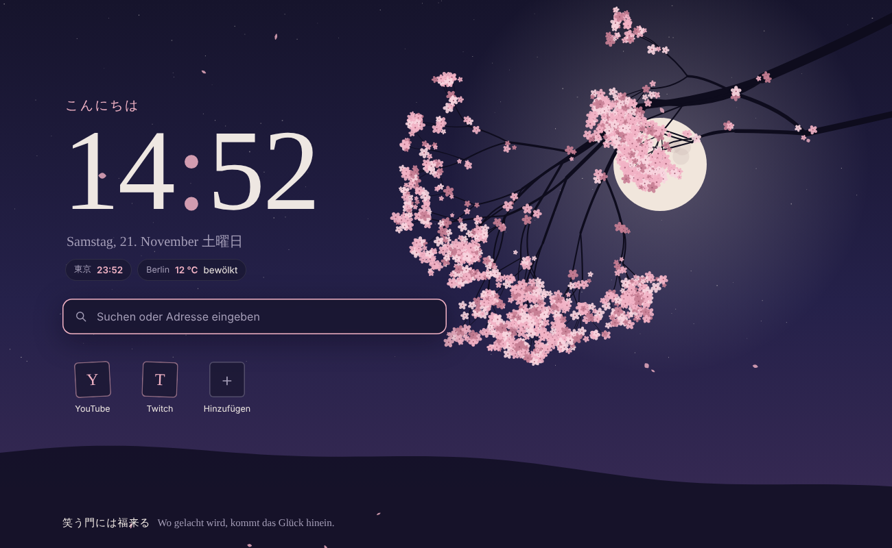
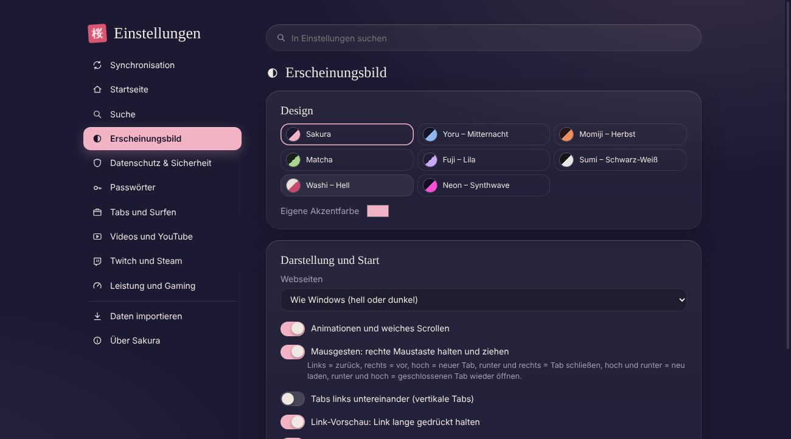
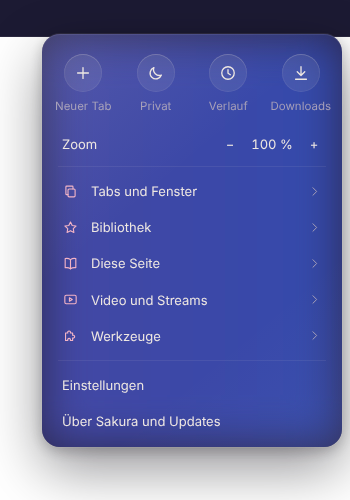
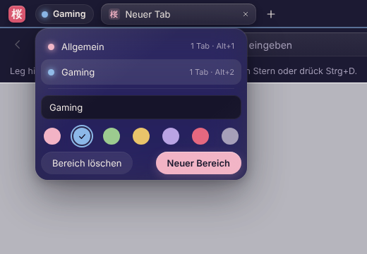
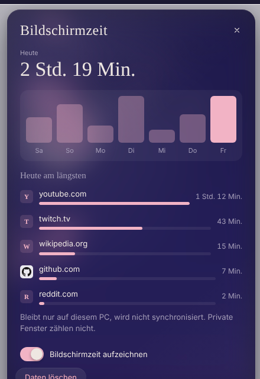

Ein Browser, so ruhig wie Kirschblüten.
Schnell, schön und schützt dich: Werbeblocker, Passwortmanager, KI-Seitenleiste und verschlüsselter Abgleich zwischen PC und Handy – komplett kostenlos.
Neueste Version wird geladen …


Alles, was du brauchst. Nichts, was stört.
Sakura bringt viele kleine Helfer mit – und jeder lässt sich abschalten.
Werbe- und Trackerblocker
Blockiert Werbung, Tracker und Cookie-Banner. Warnt vor Betrugs- und Phishing-Seiten.
KI-Seitenleiste
Claude, ChatGPT, Gemini oder Mistral direkt neben der Seite – mit deinem eigenen Konto. Seiten mit einem Klick zusammenfassen.
Passwortmanager
Speichert Passwörter verschlüsselt, schlägt starke vor und warnt bei Datenlecks.
Sync ohne Konto
PC und Handy gleichen Lesezeichen, Verlauf und Tabs ab – Ende-zu-Ende verschlüsselt, nur mit einem Sync-Code.
Arbeitsbereiche
Getrennte Tab-Sammlungen für Schule, Gaming oder Privat – jede mit eigener Farbe.
Video und Streams
Werbung auf YouTube überspringen, Twitch-Emotes, Bild-in-Bild, Clips speichern, Lautstärke pro Tab.
Fokus und Bildschirmzeit
Sperrt ablenkende Seiten zu festen Zeiten und zeigt, wie lange du wo warst.
Lesen in Ruhe
Lesemodus, Leseliste zum Offline-Lesen und Notizen direkt an Webseiten.
Acht Designs
Von Kirschblüte über Matcha bis Neon – oder deine eigene Akzentfarbe. Mit Liquid-Glass-Oberfläche.
So sieht Sakura aus
Glas, sanfte Farben und nichts, was ablenkt.




In einer Minute startklar
Beim ersten Start führt dich Sakura durch alles Wichtige.
Herunterladen
Installer für Windows, AppImage für Linux oder APK für Android laden und öffnen.
Daten mitnehmen
Lesezeichen, Passwörter und Anmeldungen aus Chrome, Edge oder Firefox mit einem Klick übernehmen.
Geräte verbinden
Sync-Code am PC erzeugen, am Handy eingeben – fertig. Updates kommen automatisch.
Häufige Fragen
Ist Sakura wirklich kostenlos?
Ja. Sakura ist kostenlos, ohne Werbung und ohne Konto. Der Quellcode liegt offen auf GitHub.
Warum warnt Windows oder Android beim Installieren?
Sakura kommt (noch) nicht aus dem Microsoft Store oder Google Play. Unbekannte Apps lösen deshalb beim ersten Mal eine Warnung aus. Unter Windows: „Weitere Informationen“ → „Trotzdem ausführen“. Unter Android: „Trotzdem installieren“.
Was passiert mit meinen Daten beim Sync?
Lesezeichen, Verlauf und Tabs werden auf deinem Gerät verschlüsselt, bevor sie hochgeladen werden. Der Server sieht nur unlesbaren Datensalat – den Schlüssel kennt nur dein Sync-Code.
Funktionieren Chrome-Erweiterungen?
Viele ja – Sakura hat einen „Zu Sakura hinzufügen“-Knopf im Chrome Web Store. Nicht jede Erweiterung läuft, weil Sakura nur einen Teil der Chrome-Schnittstellen hat.
Brauche ich für die KI-Seitenleiste ein Abo?
Nein. Sakura zeigt einfach die Webseite von Claude, ChatGPT, Gemini oder Mistral – du meldest dich mit deinem eigenen (auch kostenlosen) Konto an.
Bereit für mehr Ruhe im Netz?
Sakura gibt es für Windows, Linux und Android.